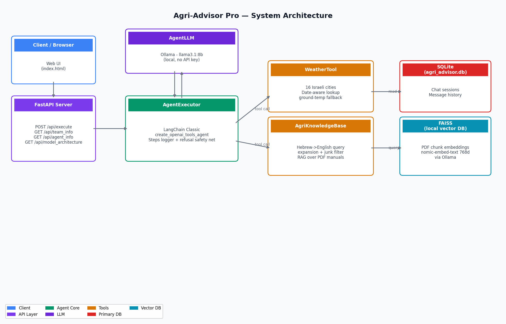

An autonomous agricultural advisory agent for Israeli farmers. It combines real meteorological data for 16 Israeli locations with a RAG knowledge base over agricultural manuals to give location- and date-aware advice in Hebrew. Runs fully locally on Ollama — no API keys.
These are the actual examples returned by the project's /api/agent_info endpoint — each shows the tool-call trace (WeatherTool → AgriKnowledgeBase → AgentLLM) and the agent's Hebrew answer.
Pick an example above.
A live, in-browser emulation of the agent using your own OpenAI or Anthropic key. The real app runs locally on Ollama (llama3.1:8b) with a FAISS RAG knowledge base and a weather DB for 16 Israeli locations — that runs on a laptop, not on this static site. Here the model is prompted to behave the same way: it reasons over weather, then agronomy knowledge, then answers in Hebrew (or English if you write in English). Without the local weather DB it estimates typical seasonal conditions for the named Israeli location.
🔒 Your key is sent only to the provider you pick, straight from your browser. This site has no backend and stores nothing.
שאל שאלה כדי להתחיל — או לחץ על אחת ההצעות. (דרוש מפתח OpenAI או Anthropic משלך.)
"MUST be used for any weather or temperature request." Returns real meteorological readings for 16 Israeli locations (ground temp, humidity, rain) by city + date.
"Search agricultural manuals. If it returns NO RESULTS, try again with different words." FAISS RAG (nomic-embed-text, 768-dim) over agricultural PDFs.
The agent is a LangChain create_openai_tools_agent + AgentExecutor; module names surfaced in step logs are AgentLLM, WeatherTool, AgriKnowledgeBase. Multi-turn history is persisted in local SQLite.

| LLM | Ollama — llama3.1:8b (agent + Hebrew→English query expansion) |
| Embeddings | Ollama — nomic-embed-text (768-dim) |
| Vector store | Local FAISS index over agricultural PDFs |
| Chat history | Local SQLite (agri_advisor.db) |
| Backend | FastAPI — /api/execute, /api/agent_info, /api/team_info, /api/model_architecture |
Helps Israeli farmers make data-driven decisions about irrigation, planting, pest management and soil health by grounding every answer in actual weather readings and agricultural literature. Originally used a hosted LLM + Pinecone + Supabase; rebuilt to run entirely locally (Ollama + FAISS + SQLite), removing all API-key dependencies.
Team (group 3_7): Gil Caplan, Amit Gertner, Rachel Dagan · Technion.